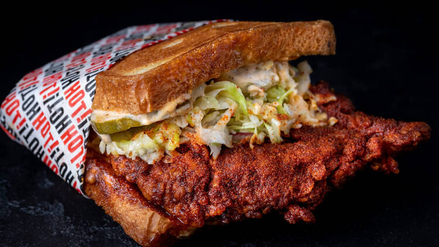
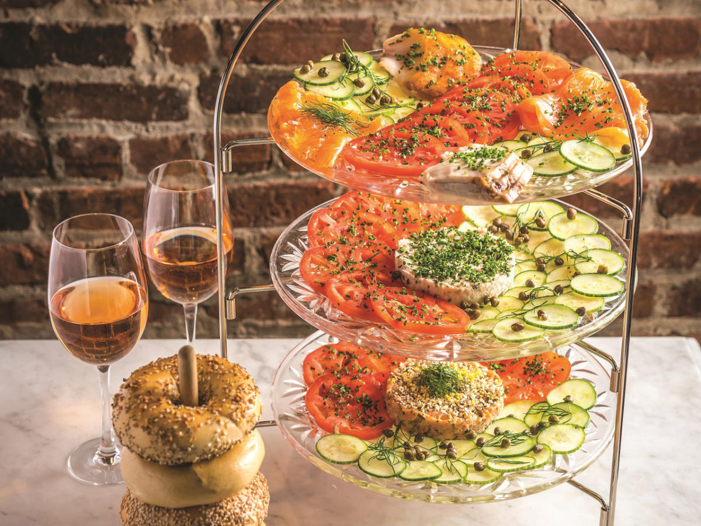

Howlin' Ray's
Howlin' Ray's has Nashville hot chicken style food and they have many locations in Los Angeles as well, but the one in Las Vegas is located in the Via Via Food Hall at The Venetian Hotel and Casino. For me, they have the best hot chicken I have ever had.
I always get the Luis Style Sando which is a chicken sandwich with 2 buttered toasts as the buns, which makes it delicious! If you like hot chicken and are ever in the area, I would definitely recommend checking it out!

Sadelle's Cafe
Sadelle's Cafe is located inside the Bellagio, and is accessible through the Conservatory and Botanical Garden next to the front entrance and hotel lobby. As a cafe, they offer breakfast, brunch, and lunch. This cafe is super well-known as one of the best in Vegas, but I always enjoy visiting here at least once on my trip as if I am not staying in the Bellagio, I am staying close enough to visit it by either tram or walking anyway.
When I go to Sadelle's, I always have to get the delicious blueberry pancakes. However, they have a lot of options like french toast, bagels, soups, and other classic brunch foods as well.

El Dorado Cantina
El Dorado Cantina is a Mexican restaurant located on the Las Vegas Strip, behind Resort World. What makes them special is that they make everything in house and only use beef tallow or avocado oil for all of their fried foods like housemade tortilla chips. Everything is very fresh which makes every dish just delightful.
When I went, it was for my 21st birthday, and the server was very energetic. I asked him about the fajitas and if they are good, and he told me they are the best thing on the menu, so I took his word for it and decided on those. When it came, it was so huge it came out on what looked like a wooden cutting board. It was loaded with fresh steak, chicken, fajita veggies, rice, beans, sour cream, guacamole, and a ton of tortillas. That was the best Mexican food I have ever had by far, and it wasn't even close. I definitely recommend trying El Dorado Cantina and it will not disappoint!
Other Food Experiences
Las Vegas has many other food experiences besides individual restaurants. Many casinos like the Wynn, Cosmopolitan, Luxor, etc. have their own buffets, food halls, dessert shops, popular celebrity chef restaurants like Gordon Ramsey's Hell Kitchen, and many more.